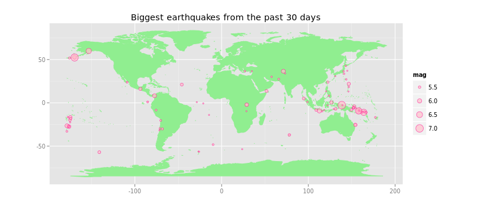

The USGS Earthquake Hazards Program is part of the National Earthquake Hazards Reduction Program (NEHRP) and provides several data on earthquake location and magnitude.
The data on earthquakes of the last 30 months is avaiblable at http://earthquake.usgs.gov/earthquakes/feed/v1.0/csv.php.
Below are the fields included in the spreadsheet output:
time
latitude
longitude
depth
mag
magType
nst
gap
dmin
rms
net
id
updated
place
Loading libraries and downloading the feed:
library(reshape2)
library(ggplot2)
library(ggmap)
eq <- read.csv("http://earthquake.usgs.gov/earthquakes/feed/v1.0/summary/all_month.csv", as.is = T)
head(eq[c("time", "longitude", "latitude", "place", "mag")])
## time longitude latitude
## 1 2015-08-29T10:28:59.920Z -122.4257 38.76217
## 2 2015-08-29T10:19:59.980Z -116.7772 33.27117
## 3 2015-08-29T10:17:04.360Z -97.3440 36.26630
## 4 2015-08-29T10:02:55.280Z -116.7738 33.26933
## 5 2015-08-29T09:59:42.000Z -151.3888 62.68840
## 6 2015-08-29T09:55:55.350Z -123.5943 39.48450
## place mag
## 1 12km ESE of Hidden Valley Lake, California 2.11
## 2 4km NNW of Lake Henshaw, California 0.69
## 3 5km WSW of Perry, Oklahoma 2.50
## 4 3km NNW of Lake Henshaw, California 0.60
## 5 77km WNW of Talkeetna, Alaska 1.50
## 6 18km ENE of Fort Bragg, California 2.21
Preprocessing the data:
eq <- subset(eq, type=="earthquake")
eq$area <- factor(sub("^[^,]+, ", "", eq$place))
eq$date <- as.Date(strtrim(eq$time, 19), format = "%Y-%m-%dT%H:%M:%S")
Building a new dataset with magnitude frequencies by day:
eqFreq1 <- with(eq, table(date, mag))
eqFreq2 <- melt(eqFreq1)
names(eqFreq2) <- c("date", "magnitude", "freq")
head(subset(eqFreq2, freq > 0 & magnitude > 0))
## date magnitude freq
## 1066 2015-08-10 0.01 1
## 1071 2015-08-15 0.01 1
## 1072 2015-08-16 0.01 1
## 1081 2015-08-25 0.01 1
## 1093 2015-08-06 0.02 1
## 1096 2015-08-09 0.02 1
Plotting a stacked bars graph of earthquakes magnitude frequencies by day:
eqFreq2$magnitude <- factor(round(eqFreq2$magnitude))
ggplot(eqFreq2, aes(date, weight = freq, fill = magnitude)) +
geom_bar(binwidth = 60 * 60 * 24) +
labs(x = "Date", y = "Frequency",
title = "Earthquakes Frequency from the past 30 days") +
theme(axis.text.x = element_text(angle = 90, hjust = 1)) +
scale_fill_brewer(palette="BuPu")

Using the original dataset to plot a map with the locations of the 100 biggest earthquakes:
BiggestMag <- tail(sort(eq$mag), n=100)
#Plotting
library(maps)
world_map <- map_data("world")
ggplot() + coord_fixed() + xlab("") + ylab("") +
geom_polygon(data = world_map,
aes(x = long, y = lat, group = group),
colour = "light green", fill = "light green") +
geom_point(aes(x = longitude, y = latitude, size = mag),
data = eq[eq$mag %in% BiggestMag ,],
colour = "Deep Pink", fill = "Pink",
pch = 21, alpha = I(0.7)) +
labs(title="Biggest earthquakes from the past 30 days")
